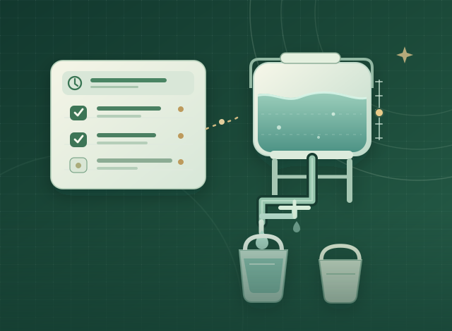
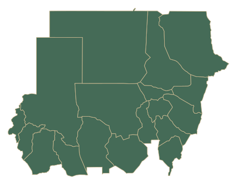

Our mission
To bring people together to tackle challenges facing communities in Sudan through shared knowledge, local experience and practical action.
SIRAI brings people, local experience and practical ideas together to tackle challenges facing communities in Sudan. We’re starting small, openly, and with communities at the center.

SUDAN IN NUMBERS 2026
Behind every figure is a person, a family, and a community. Explore three measures of Sudan's humanitarian crisis.
An estimated 33.7 million people across Sudan require humanitarian assistance in 2026.

By June, humanitarian partners had reached approximately 31.5% of those estimated to need assistance.
Nearly one in two people requiring humanitarian assistance in 2026 is a child.
HOW TO READ THIS
The silhouette locates Sudan. The 33.7 million figure applies to the country as a whole, not evenly across its states.
INTERNALLY DISPLACED PEOPLE BY HOST STATE
Map: June 2026 IOM DTM state estimates. The main 8.58M is from August 2026. The published June total differs from the state table sum by 20. View state data
17.3M children out of 33.7M people in need. This compares two UNICEF estimates, not state-level data.
These estimates come from UNICEF and IOM, cover different reporting periods, and may overlap. They are not SIRAI outcomes or beneficiary figures. Reviewed 5 November 2026.
FIRST TIME HERE?
Follow a fictional water, project or household energy scenario. Every sample is clearly labelled and designed for learning, not as evidence of field delivery.
EXPLORE SUDAN
Explore all 18 states, find relevant published information and take useful planning tools offline. No invented project markers or unverified service listings.
Open Sudan ExplorerOpen each tool while online to save the lightweight pages for later offline use. Calculators can work without internet after the files load successfully. Sending feedback and loading photos still need a connection. Test this on your own device before relying on it.
In Sudan, neighbors and volunteers often come together when essential services are under strain. SIRAI starts from that spirit of shared responsibility.
To bring people together to tackle challenges facing communities in Sudan through shared knowledge, local experience and practical action.
A Sudan where communities have the opportunity, resources and voice to shape their own futures.
Water is one starting point, not our entire purpose. Our work will grow around the priorities communities identify.
Practical approaches to everyday challenges, shaped by people who know their communities.
WaterShare is a simple, multilingual tool for planning shared water-collection schedules and estimating daily volumes. It draws inspiration from prior community experience, but it is a new SIRAI tool, not a claim that SIRAI has already delivered a field project.
Open WaterShare toolkitA practical workspace for community-led projects. Clarify the need, build a budget, define roles, plan milestones and share a draft proposal.
Explore ProjectStarter →A free household electricity toolkit for understanding appliance consumption, planning essential battery backup and exploring preliminary solar scenarios.
Explore TaqaWise →SIRAI brings together local insight, practical ideas and a belief that even small efforts can matter.

People look out for each other, even when they have very little to spare.
I was born in Port Sudan, and no matter where life has taken me, Sudan has always felt like home. The time I've spent there taught me something I've never forgotten. People look out for each other, even when they have very little to spare. That spirit is what I want SIRAI to build on.
It's hard to see what Sudan is going through. I know a small initiative won't change everything, but I don't think that means we should do nothing. We can listen, share what we know, and try to make things a little easier, one step at a time. Even a small difference in someone's life would mean a lot to me.
My background is in engineering, but I don't want SIRAI to be defined by a degree or by one person's ideas. I want it to be a place where people feel heard, bring what they know, and work on things that genuinely matter to them. That's the kind of work I'd be proud to be part of.
Publish the website and accessible community-planning resources in multiple languages.
Invite feedback from Sudanese community members and volunteers; improve the toolkit accordingly.
Work with local collaborators on a small, clearly documented activity when feasible and safe.
“Built with communities.”Our commitment is to participation, transparency and practical work, not promises we cannot yet prove.
Found a problem, a confusing instruction, or a better approach? Tell SIRAI.